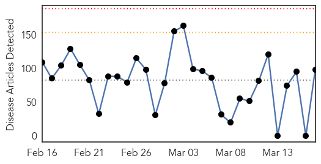
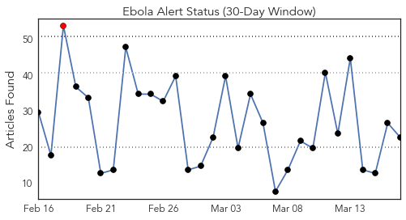
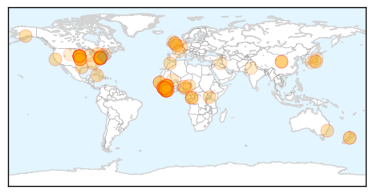
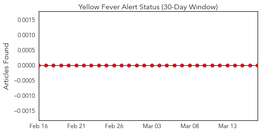
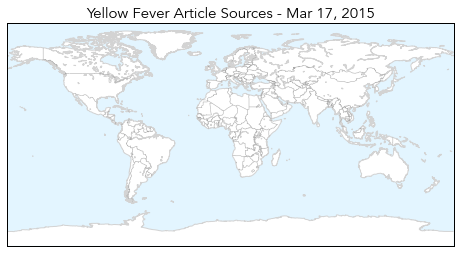
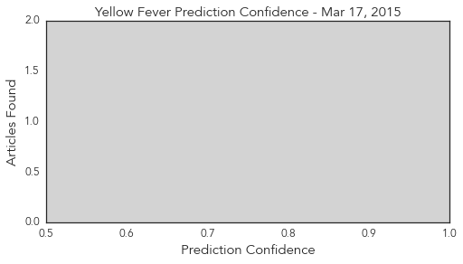

Ebola
30-Day Web Trend
0 alerts, 0 warnings

30-Day Twitter Trend
1 alerts, 0 warnings

Article Locations
Article Confidences

Top Articles:
- 1.000
- Pioneering work could stop Ebola - and badger culls
- 1.000
- Factbox: What is Ebola and how has it spread?
- 1.000
- UPDATE 1-Guinea Ebola cases rise, three doctors infected
- 1.000
- US Ebola Patient Deteriorates to Critical Condition
- 1.000
- 10 US charity staff to leave Sierra Leone amid Ebola scare - Story
- 1.000
- American Ebola patient worsens to critical condition
- 1.000
- Returning Ebola workers stay away from their families
- 1.000
- Partners in Health plans to stay in West Africa even as one of its workers is stricken with Ebola
- 1.000
- UAB grad tapped to evaluate response to Ebola epidemic
- 1.000
- American who contracted Ebola now in critical condition
- 1.000
- American who contracted Ebola now in critical condition
- 1.000
- US Ebola Patient Deteriorates to Critical Condition
- 1.000
- Ebola-infected American health care worker now in critical condition
- 1.000
- Total of 10 American aid workers arrive in U.S. from Sierra Leone for Ebola monitoring
- 1.000
- Are we ready for the next global epidemic?
- 0.999
- Guinea Ebola cases rise, three doctors infected
- 0.999
- American who contracted Ebola 'now in critical condition'
- 0.999
- 4 more aid workers flown back to U.S. for Ebola monitoring
- 0.999
- Condition worsens for American health care worker being treated in Maryland for Ebola
- 0.999
- 4 more aid workers flown back to US for Ebola monitoring
- 0.999
- American who contracted Ebola now in critical condition
- 0.998
- Local health officials monitoring potential Ebola patients
- 0.998
- American With Ebola Now in Critical Condition
- 0.998
- Emergent announces human trial for boosted Ebola vaccine
- 0.997
- In Ending Ebola, a Struggle to Track Victims' Elusive Contacts
- 0.997
- First U.S. Citizen is About to Die from Ebola, Says NIH
- 0.995
- Military leaders and aid workers to meet at Ebola summit Scotland
- 0.994
- American who contracted Ebola now in critical condition
- 0.993
- All hands on deck: Doctor answers call to work on largest Ebola epidemic in history
- 0.993
- American Who Contracted Ebola in Africa in Critical Condition
- 0.990
- "Stubborn” Sierra Leone families are hampering ebola fight, says UNICEF
- 0.989
- City of Amarillo Reporting 2 Patients Being Monitored for Ebola -
- 0.984
- US Ebola patient in critical condition
- 0.984
- US Ebola patient in 'critical condition'
- 0.983
- Liberia's last Ebola patient grateful for love, support
- 0.981
- An American aid worker with Ebola receives speedy care, while a Sierra Leonean colleague is 'left behind'
- 0.980
- Woman attacked, robbed at Glen Burnie Pizza Hut
- 0.980
- Area Muslims are battling for holy days off
- 0.980
- Marshawn Lynch in brawl with taunting fans?
- 0.980
- Plea deal for man in Maryland ballpark assault on Yankee fan
- 0.979
- Aussie isn’t letting Ebola stop her work in Sierra Leone
- 0.978
- 10 US charity staff to leave Sierra Leone amid Ebola scare
- 0.978
- Early Warning for Ebola: Strengthening Africa's Capacity to Anticipate Risk of Outbreaks - World
- 0.976
- Cuban medical team concludes a successful Ebola response support mission to Liberia - Liberia
- 0.975
- Chiba native helping to fight Ebola epidemic in West Africa
- 0.973
- Ebola-Quarantined Sierra Leone VP Requests US Asylum as 11 Exposed Americans Fly Home
- 0.972
- US Ebola patient in critical condition
- 0.969
- US Ebola Patient Now In Critical Condition
- 0.968
- President Koroma Admonishes Bombali
- 0.963
- 1 out of 5 Ebola infections hits a child -- DAKAR and GENEVA and TORONTO, March 17, 2015
Showing top 50 articles...
Top Tweets:
- 0.991
- Guinea Ebola cases rise, three doctors infected - Reuters http://t.co/zisEzGIpvv ebola EVD
- 0.983
- Guinea Ebola cases rise, three doctors infected - Fox News http://t.co/fkc4zZ3GUp ebola EVD
- 0.980
- Local health officials monitoring potential Ebola patients - KFDA http://t.co/XHf76wMT8G ebola EVD
- 0.941
- Care Differs for American and African With Ebola - New York Times http://t.co/7IhXYb0e2F ebola EVD
- 0.886
- This Ebola Orphan Watched Her Family Die - Daily Beast http://t.co/WHh2NiS6D0 ebola EVD
- 0.886
- This Ebola Orphan Watched Her Family Die - Daily Beast http://t.co/HdoXCsLZEK ebola EVD
- 0.886
- This Ebola Orphan Watched Her Family Die - Daily Beast http://t.co/HUCBJAgtlB ebola EVD
- 0.847
- Guinea Ebola cases rise, three doctors infected http://t.co/6q1iHmRDKe via
- 0.841
- Guinée. Après le fiasco de « Zéro Ebola en 60 jours » la coord se donne jusqu’au 15 avril http://t.co/RL2NT634Ij … via
- 0.827
- Global Ebola Battle Comes To Baltimore - CBS Local http://t.co/7zydypUMw7 ebola EVD
- 0.805
- Council conclusions on Ebola - EU News http://t.co/D2GzA0LezS ebola EVD
- 0.796
- The surprising new Ebola case scorecard: US 1, Liberia 0 - Washington Post (blog) http://t.co/4t9BrAaFpV ebola EVD
- 0.778
- FACT SHEET: @_AfricanUnion Response to the Ebola Epidemic Africaagainstebola @calestous http://t.co/BNS9ZWjXWn
- 0.766
- Care Differs for American and African With Ebola http://t.co/4EeqnMmHP0
- 0.721
- 4 More Aid Workers Flown Back to US for Ebola Monitoring - ABC News http://t.co/MYfAE7EYpF ebola EVD
- 0.683
- How Bad Data Fed the Ebola Epidemic http://t.co/aJlzg8uSKj
- 0.660
- RT: Ebola: While schools closed in SierraLeone, Guinea & Liberia, our radio education programmes reached 1m children http://t.c…
- 0.638
- Ebola, quels sont les effets secondaires ? @ACF_France http://t.co/5t9aeiip2X
- 0.632
- Ebola and Measles Control Activities in Guinea, Liberia and SierraLeone http://t.co/3Gg06LTnG4
- 0.613
- Ebola Epidemic: Why a Few Cases Could Threaten Progress http://t.co/MAGIDPrqRI via
- 0.611
- RT: How Bad Data fed the Ebola Epidemic http://t.co/CmimHBXF4k SierraLeone
- 0.590
- Early Warning for Ebola: Strengthening Africa's Capacity to Anticipate Risk of Outbreaks via https://t.co/naKJWsygHR EbolaResponse
- 0.503
- Ebola - Traditionalhealers, witchdoctors, burial attendants @HEART_RES http://t.co/gDZ41M9uE3
Yellow Fever
30-Day Web Trend
0 alerts, 0 warnings

30-Day Twitter Trend
0 alerts, 0 warnings

Article Locations
Article Confidences
Top Articles:
-
No articles found for Mar 17, 2015
Top Tweets:
-
No tweets found for Mar 17, 2015